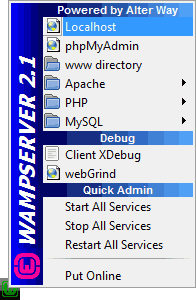
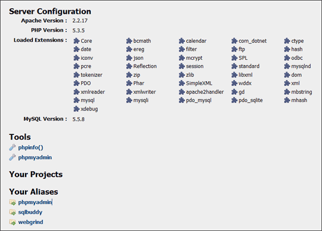
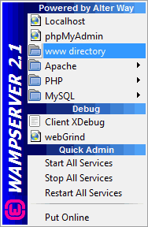
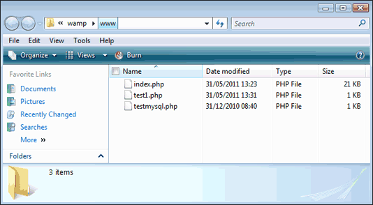

Installing and Testing Wampserver
Hopefully, you have now downloaded and installed Wampserver. This will give you a server on your own PC (Windows users), somewhere you can test your scripts. If you haven't yet dowloaded the Wampserver software, you can download it here:
If the installation went well, you should have an new icon in the bottom right, where the clock is:

Click the icon to see the menu above.
From here, you can stop the server, exit it, view help files, and see the configuration pages.
Click on localhost, though, and you'll see this page appear: (Localhost just refers to the server running on your own computer. Another way to refer to your server is by using the IP address 127.0.0.1.)

Click the link under Tools that says phpinfo(). If all went well, you should be looking at the following page (The one below is a different php version, but don't worry about this - as long as you see something):
The info.php page (click to open in a new window 66K)
If you saw the above page, then congratulations! Your PHP server is up and running, and you can make a start scripting PHP pages.
Troubleshooting
If you don't see the info.php page, then you will need to refer to the wampserver forums. The page you need is here:
Hopefully, your question will already have been asked an answered. (Unfortunately, we can't answer questions about Wampserver, as it's not our software.)
Saving your PHP files
Whenever you create a new PHP page, you need to save it in your WWW directory. You can see where this is by clicking its item on the menu:

When you click on www directory, you should see an explorer window appear. This one is from Windows Vista: (You'll probably have only two files, index and testmysql.)

This www folder for Wampserver is usally at this location on your hard drive:
c:/wamp/www/
Bear this in mind when you click File > Save As to save your PHP scripts.
Launching your PHP scripts
Suppose you have created a php script called test1.php. To launch this script, you need to add the script name after localhost in your browser. So instead of this:
http://localhost/index.php
You would type this:
http://localhost/test1.php
You don't type the name of the wamp folder, however. This would be wrong, for example:
c:/wamp/www/test1.php
As too would this:
http://localhost/www/test1.php
Your server knows where the www folder is, so you don't have to type it out: just add the script name to localhost. Likewise, if you create a folder under www then you'd just type this:
http://localhost/folder_name/script_name.php
OK, we'll assume that everything is now up and running. If it's not, click "Move on to the Next Part" below, for some troubleshooting. If it is, click "Back to the PHP Contents Page".